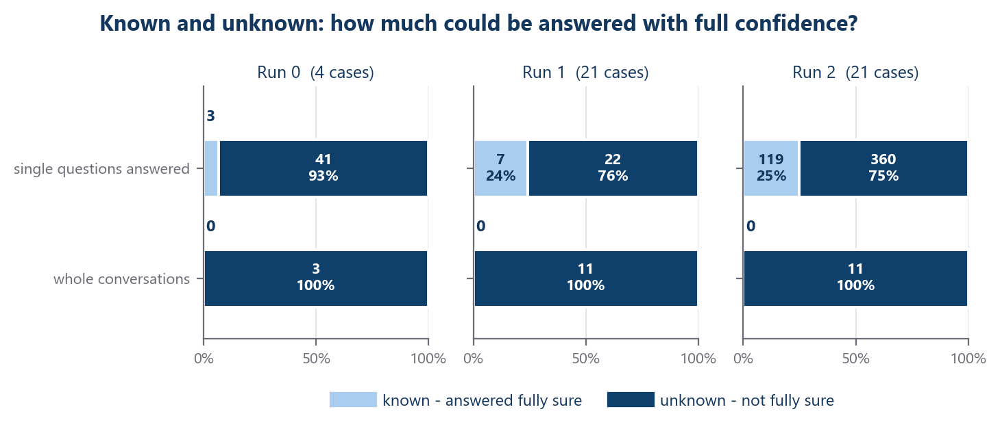
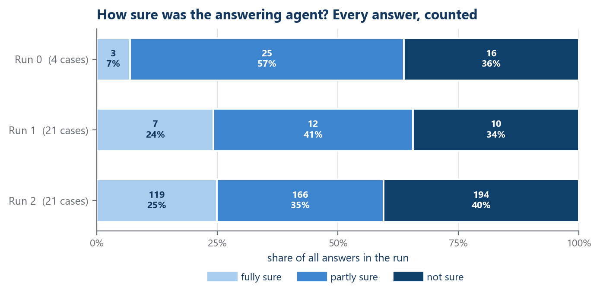
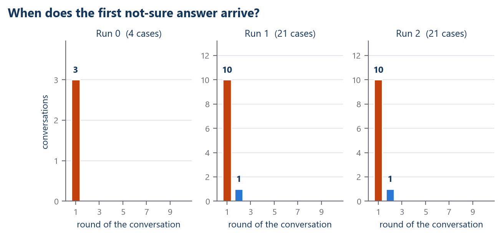
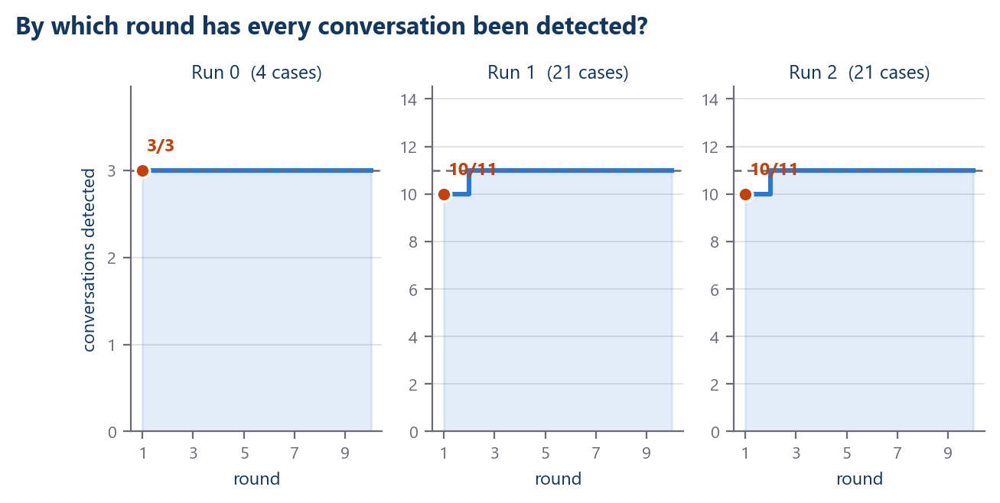
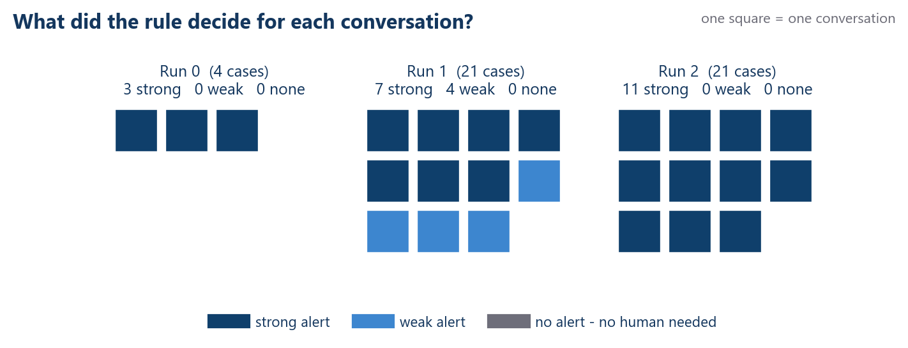
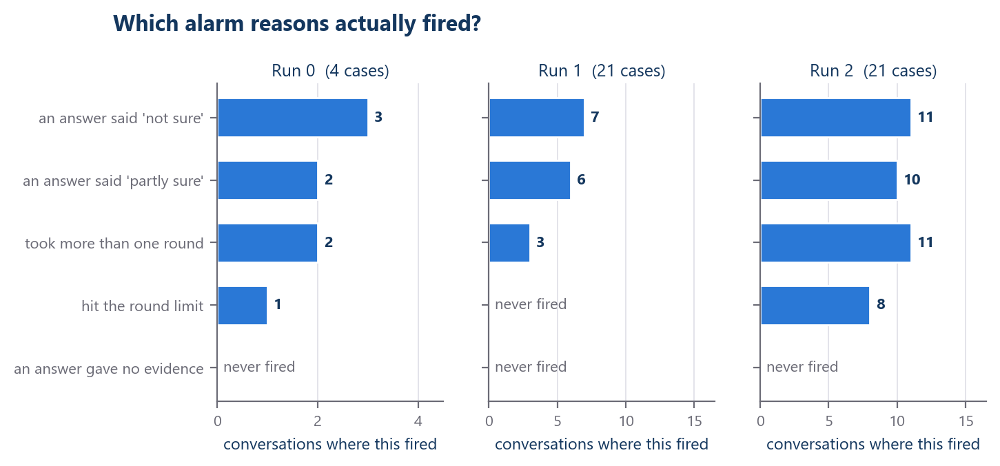
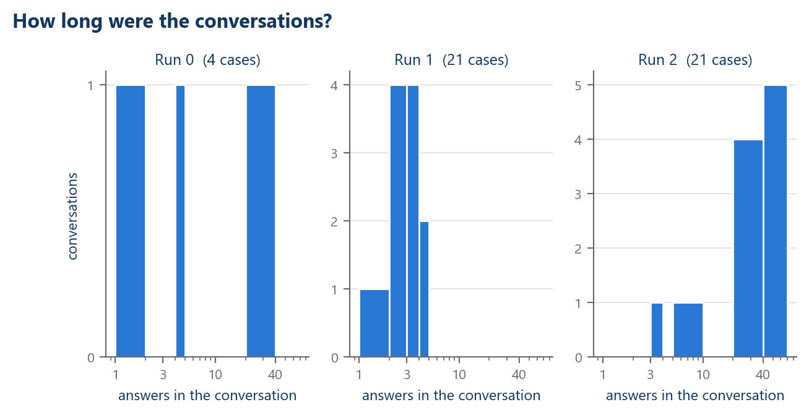
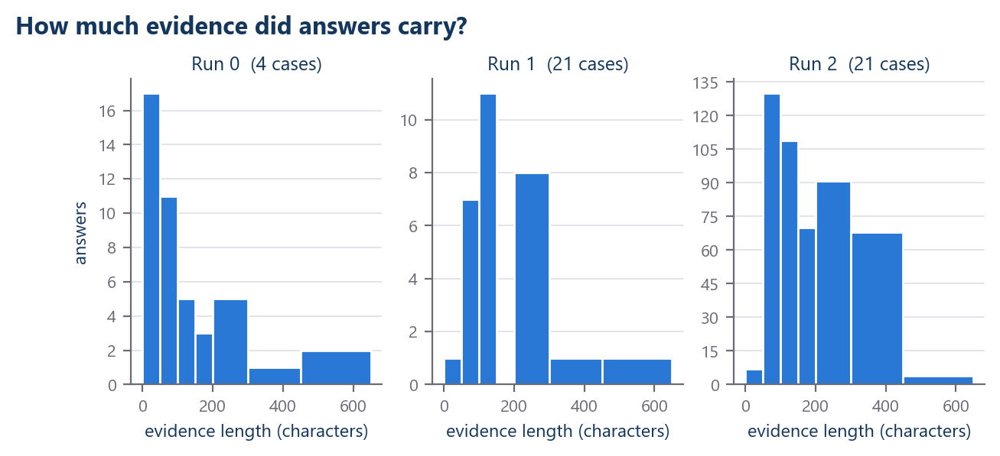
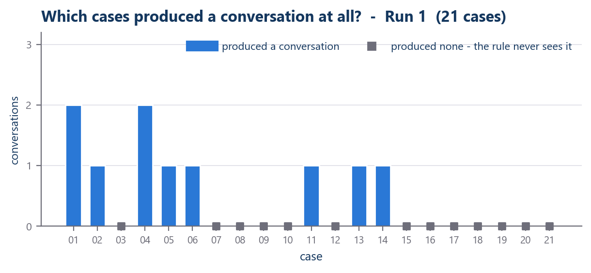

When does the system notice it needs a human?
VEGO-AI · Study 1 · the detection baseline, in plain language
75%+
answers not fully sure
Four words, before the charts
ConversationOne agent asks, another answers, until they stop.
RoundOne back-and-forth. A conversation can take up to 10.
Not sureThe answering agent's own words about its answer. It does not mean the answer was wrong.
DetectionThe first moment the rule has something to fire on. It does not mean a problem happened.
Question 1 · Known and unknown questions

Top row: single answers. Bottom row: whole conversations. About a quarter of answers came back fully sure - but not one conversation was fully sure from start to finish.
0 conversations Not one recorded conversation was answered with full confidence all the way through. That is why every conversation ends up in front of a human, and why nothing here can be called a saving of human time.
What these charts show
- Most answers were not fully sure — between 75% and 93% in each run.
- Detection happens at round 1 in 9-10 of every 10 conversations.
- Only two of the five alarm reasons do most of the work.
- 'No evidence' never fired — every answer carried evidence.
- Every conversation was flagged. Not one was cleared.
What they do not show
- Not whether any answer was right or wrong. Nobody has checked.
- Not that a flagged conversation contains a problem.
- Not that a grey case is safe.
- Not any saving of human time — nobody measured it.
- A rule that flags everything has not sorted anything yet.
Question 2 · How sure were the answers?

Every answer in each run, sorted by how sure the answering agent said it was. Most answers were not fully sure. Runs are shown separately and never added together.
Question 3 · The detection point

Each bar counts conversations whose first not-sure answer landed in that round. Orange is round 1.
Question 4 · How fast is everything detected?

The same thing, added up. The dashed line is all conversations in that run.
Round 1 In every run, 9 or 10 out of every 10 conversations were already detectable at the very first answer, and all of them by round 2. Rounds 3 to 10 cost money and changed no flag.
Question 5 · What the rule decided for each conversation

One square is one real conversation. The grey slot in the legend stayed empty in every run: the rule never once said 'no human needed'.
Question 6 · The alarm reasons

The rule has five reasons it can fire. Grey means it never fired in that run. 'No evidence' never fired anywhere — every answer carried some evidence.
Question 7 · Conversation length

Number of answers per conversation. Run 1 stayed short; Run 2 ran long. Nothing in the setup was changed between them.
Question 8 · Evidence in the answers

Length in characters of the evidence attached to each answer. No answer came back empty, which is why the 'no evidence' alarm never fired.
Question 9 · Coverage, and the blind spot

A grey square on the baseline marks a case that produced no conversation at all, so the rule never saw it. That is a blind spot, not a clean bill of health.
Status
DESCRIPTIVE RULE BEHAVIOUR ONLY - NOT READY FOR A SCIENTIFIC CONCLUSION
All numbers recomputed from the saved recordings. The rule was never changed. A fourth pilot run exists but cannot be verified from the published files, so it is left out of every chart here.